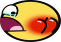
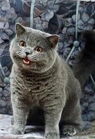
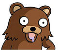
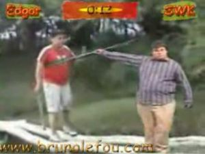

Anexo:Fenómenos de Internet
 De: La Frikipedia, la enciclopedia extremadamente seria.
De: La Frikipedia, la enciclopedia extremadamente seria.
Bienvenido querido y estimado friki, admitámoslo, la internet es un lugar confuso y aterrorizante, es por eso que, para que puedas demostrar lo antisocial que eres mucho que sabes sobre la web, aquí te presentemos un listado de los fenómenos Interneteros más conocidos, ya sean memes, videos virales, imágenes, tu historial académico entre otros desperfectos de la humanidad. Si nos olvidamos de colocar tu fenómeno de internet favorito puedes dejar todas tus quejas en la página de discusión o simplemente puedes irte a la mierda.
Se procederán las categorías por orden alfabético para que no sufras episodios mentales incómodos y si no tienes tiempo y quieres encontrar un fenómeno en particular presiona ctrl+f y todos tus deseos se harán realidad ¿Ya ves? no siempre somos unos hijoputas mal educados en la frikipedia, si eso no te basta intenta con Alt+F4 y podrás guiarte por esta página más rapidamente ...
Animación
- Caramelldansen: pertenece a la novela visual Popotan, mostrando a dos personajes de la misma
sufriendo de un ataque de personalidad múltiple, en la cual se creen Conejos bailarines haciendo un baile con las manos sobre la cabeza, mientras se escucha la canción Caramelldansen del grupo Francés Caramell, es una Meme por el hecho de ser básico y a tal grado un poco absurdo extrañamente cómico y generalmente parodiado con otros personajes de Anime.
- Charlie The Unicorn: Charlie el Unicornio consiste en una serie de videos en los cuales un unicornio que es reiteradamente engañado por dos unicornios sin nombre, de color azul y rosa, que lo traen con el fin de robarle sus pertenencias o le causa daño físico.
- Dancing Baby: un baile en 3D del bebé que apareció por primera vez en 1997 por los creadores de 3D Studio MAX, eso mismo, es solamente un Bebe bailando una especie de baile desconocido, más tarde por tan genial idea, este se convirtió en una meme.
- Dynamic Entry: escena del anime Naruto que mostró a Gai sensei dandó su típica patada voladora a Jiraiya por
el culo accidente, gracias a la exagerada naturaleza del movimiento la escena se convirtió en una de las más recordadas y parodiadas de este anime.
- Loituma Girl: consiste en una escena del Anime Lejía, en la cual Orihime le da vueltas a
unos espárragos un Puerro mientras se escucha de fondo la canción Loituma.
- My Little Pony Friendship is Magic: la historia de cómo una caricatura para niñas se convirtió en uno de los fenómenos de internet más notables de los últimos tiempos es larga y confusa, así que te lo resumimos en el artículo que escribimos justo para ti
, pedófilo.
- Nyan cat: es el video de un gato pokemonizado con una tarta de fresa que vuela por el universo mientras esta cagando un arco iris… Es en serio y no hagan más preguntas sobre el tema.
- Osaka Shoe: es una escena del anime Azumanga Daioh, un anime sobre chicas haciendo cagada y media, en donde Osaka (la más idiota del grupo) decide lanzar su zapato al aire sin razón aparente. La escena es tan
estúpida cómica que fue parodiada en varios videos de yutuf, lo único que hasta ahora nadie sabe es comó carajos el zapato pudo volar tan alto.
- Spiderman: no hablamos de spiderman en general, sino el de la serie de los 60, sí, ese con la canción original y la animación de mierda. Un día el foro de 4chan llamado /co/ (comics y caricaturas) decidió verse esta mierda de serie porque no tenía nada productivo que hacer, al ver que tan mala era la animación (entendible por el tiempo) y lo estúpida que eran las tramas (entendible por el retardo de los escritores) empezó a ganar popularidad y varias imágenes virales empezaron a ser posteadas desde ese día.
Imagánes virales
 El secreto de Awesome Face.
- Advice Dog: es un perro idiota que aparece en una escenografia arco iris dándote un consejo que probablemente no deberías seguir, a menos que seas igual de g*@$$#@*** que el perro. La imagen se volvió tan popular por lo absurdo de los consejos y lo adorable que se ve el animal, actualmente existen más de 9000 (más de esa frase adelante) variaciones porque nadie en la internerd tiene originalidad.
- Awesome Face: "Cara Asombrosa" es un adorable smiley amarillo con una sonrisa enorme y mirando hacia arriba placenteramente probablemente porque le estén dando por el recto. Es uno de los smileys más reconocidos en la web (probablemente no tanto como XD pero igual…) y se usa para describir algo asombroso o placentero.
- Forever Alone:
un meme basado en ti ok, eso no fue muy amable, UN MEME BASADO EN TU PATÉTICA EXISTENCIA, creo que eso sonó mejor. Forever Alone, o en español sería "Solo por siempre", es una imagen viral basada en todas las personas solitarias en este malvado, crudo y patético mundo, en el cual se muestra a un tipo con quijada de elefante que tiene una ligera sonrisa de arrastrado en su rostro mientras derrama lágrimas de soledad.
- Gaijin 4koma / Reaction guys: es un comic de cuatro paneles mostrando a los empleados de IGN (ignorantes gordos nintenderos) emocionados mientras están viendo una película triple x gay. Para usar correctamente este chiste debes poner primero una imagen de algo que no llama mucho la atención seguido del panel de los 4 idiotas mostrando ningún interés por lo visto anteriormente, después pones el panel de algo que llama la atención y finalmente colocas el último panel mostrando a los 4 idiotas emocionados como si estuvieron a punto de chuparla. Si aún así no entiendes el chiste es que simplemente mereces que te maten.
- Gianfranco Castronovo Vs. El Pichi: producto de la cantera de Taringa!. No son más que dos usuarios de esa página de aportaciones (ahora convertida en red social por presiones del gobierno argentino) quienes se atrevieron a poner sus fotos en sus respectivos perfiles de dicha página, y algún usuario aprovechado no dejó pasar la oportunidad de hacer un mega chiste. Es increiblemente cómica debido a que el primer tipo tiene un nombre muy normal, sin embargo es muy feo, y el segundo, es simplemente patética su cara y además tiene un apodo que usan grandes argentinos.
- Happy Negro: "Negrata Feliz" es la foto de un actor porno negro que se volvió famoso por su peculiar expresión facial y por el hecho de que jugaba con los pechos de otra actriz, es uno de los memes más antiguos en 4chan y hasta ahora siguen habiendo uno que otro shop de este sujeto.
- How do I shot web: es una imagen de spiderman con cara de g*@$$#@*** preguntando “how do I shot web?” Que traducido suena como “Cómo puedo disparé tela?”. Ya que los gringos se ríen de cualquier estupidez empezaron a parodiar esta imagen con otros personajes de internet y el resto es historia… o no.
 Con una sola imagen se puede iniciar un virus (icanhascheezburger)...
- Keyboard cat: es uno de los gatos más famosos de yutuf y te salvará el culo cada vez que cometas un fail. El video muestra a un
abuso animal gato chistoso tocando el piano, a la gente le gustó tanto que empezaron a poner al bendito gato cada vez que algún idiota cometiera un error. El chiste se basa en los tiempo del teatro, cuando alguien mostraba un acto aburrido los organizadores sacaban al actor con un bastón y reemplazaban el acto con una pieza musical, probablemente hayas visto esto en una caricatura de Bugs Bunny a menos de que no tengas infancia.
- LolCats: el único meme que le puedes mostrar a tus padres y amigos sin arrepentirte. Lolcats son imágenes de gatos haciendo tonterías y con un texto sobrepuesto con mala ortografía, los puedes encontrar en la página icanhazcheeseburger que probablemente fue creada por
zoofilicos amantes de los animales. Hay un incontable número de imágenes pero existen unos cuantos que valen la pena mencionar:
- Happy cat: es el primer lolcat de la historia, a decir verdad, nisiquiera comenzó como un lolcat. El pequeño gato con su cara de drogado le encanto tantó a los frikis que decidieron crear una página web en donde podían subir más imágenes de gatos graciosos con textos hilarantes.
- Ceiling hat: es un gato que está sacando su cabeza por el techo, se dice que viene de otra dimensión y le gusta verte cuando te masturbas.
- Serious cat: un gato con una mirada seria y aburrida, probablemente porque lo acaban de castrar o porque está viendo una película de Adam Sandler, sea cual sea el caso, tiene cara de yonki.
- Long cat: Longcat es el rey de los gatos de internet ¿Por qué? Porque Longcat es laaaaaaaaaaaaaaaaaaaaaaaaaaaaaaarrgoooooo *ehem*, científicos hasta ahora intentan averiguar la verdadera longitud de este legendario animal pero todos los intentos resultaron en
fracaso fail. Nota: No, no es photoshop así que cállate.
- Mindfuck: es una serie de imagenes que a muy simple vista parecen inofensivas o aburridas, pero si las miras detenidamente notarás algo fuera de lo normal en la imagen, en ese momento tu cerebro procesa la información del descubrimiento tan rápido que tu mente explota y empiezas a cagar ladrillos.
- Mosh Girl / Moshzilla: es la foto de
un gorila una chica con sobrepeso en la pista de baile que estaba bailando de una manera muy peculiar peleando contra el hombre invisible, la pelea fue tan larga y épica que solo se ha podido tomar una sola fotografía. En su honor se han sacado varios shops de la increíble forma de pelear y patear de esta persona.
- O rly: es la imagen de un búho con cara de retardo mental con el texto "O rly" puesto en la parte inferior de la imagen que quiere decir "¿De veras?" o "¿En serio?". La imagen se usa frecuentemente para responder a algo con lo que no estás de acuerdo o algó que te sorprendió y no estás seguro si es verdad, pero ya que en internet todos son unos idiotas esta imagen ya dejo de tener algún significado y se usa en cualquier momento, perdiendo el chiste y sentido que tenía.
 Simplemente no puede contenerse.
- Pedobear: es el oso más reconocido de la internet y la segunda mascota de 4chan (la primera sería la loli de yotsuba pero todo el mundo la conoce como 404 girl). Es el
símbolo DIOS de todo los pedofilos y el temor de todas las niñas menores de 18 años (la edad varía según el lugar). En sus origenes el oso era conocido como KUMA en un foro japones y no era más que un simple arte de ASCII sin embargo 4chan fue y drogo al oso para que le puedan lavar el cerebro y llenar su mente de pornografia infantil corrompiendolo y así nació el enfermo oso que todos conocemos hoy en día.
- Rage Comic: mejor conocido como los comics FFFFFFUUUUUU... Empezó como un simple comic que mostraba a un tipo que tenía el mismo problema cada vez que iba al baño, cuando defecaba terminaba con el trasero mojado por las gotas de fallamos tareas mundanas.
- That fucking cat: “Ese j$$@*& gato” es una imagen del gato Tom de Tom y Jerry asomándose detrás de una barra metálica con una expresión pícara en su rostro, este es un meme bien antiguo y probablemente te estarás preguntando ¿Cuál es la gracia? Nosotros te respondemos retóricamente: ¿A quién le importa?
- Trollface: es la imagen símbolo de todos los trolls de la internet (mira el árticulo si no sabes que es un troll). La imagen es la cara de un g*@$$#@*** con una sonrisa inusualmente larga mostrando satisfacción absoluta, la misma cara que tú pondrías después de j&*&% a alguien. Se dice que tiene orígenes en Deviantart pero en realidad nació del pensamiento colectivo con un poco de magia de Monesvol.
- Zalgo: ̕҉̵̞̟̠̖̗̘̙̜̝̞̟̠͇̊̋̌̍̎̏̐̑̒̓̔̊̋̌̍̎̏̐̑̒̚̕̚҉Z ҉̵̞̟̠̖̗̘̙̜̝̞̟̠͇̊̋̌̍̎̏̐̑̒̓̔̊̋̌̍̎̏̐̑̒̚̕̚҉ ̌̍̎̏̐̑̒̓̔̊̋̌̍̎̏̐̑̒̓̔̿̿̿̚̕̕̚̕̚͡ ALGO ҉̵̞̟̠̖̗̘̙̜̝̞̟̠͇̊̋̌̍̎̏̐̑̒̓̔̊̋̌̍̎̏̐̑̒̚̕̚҉ ̌̍̎̏̐̑̒̓̔̊̋̌̍̎̏̐̑̒̓̔̿̿̿̚̕̕̚̕̚͡ ͡҉҉es un ser m҉̵̞̟̠̖̗̘̙̜̝̞̟̠͇̊̋̌̍̎̏̐̑̒̓̔̊̋̌̍̎̏̐̑̒̓̔̿̿̿̕̚̕̚͡ ̒̓̔̕̚itologico que e҉̵̞̟̠̖̗̘̙̜̝̞̟̠͇̊̋̌̍̎̏̐̑̒̓̔̊̋̌̍̎̏̐̑̒̓̔̿̿̿̕̚̕̚͡ ̒̓̔̕̚s invocado gracias al pen҉̵̞̟̠̖̗̘̙̜̝̞̟̠͇̊̋̌̍̎̏̐̑̒̓̔̊̋̌̍̎̏̐̑̒̓̔̿̿̿̕̚̕̚͡ ̒̓̔̕̚samiento colectivo de la personas, es imposible escapar de el e҉̵̞̟̠̖̗̘̙̜̝̞̟̠͇̊̋̌̍̎̏̐̑̒̓̔̊̋̌̍̎̏̐̑̒̓̔̿̿̿̕̚̕̚͡ ̒̓̔̕̚ invocarlo trae efectos desastro҉̵̞̟̠̖̗̘̙̜̝̞̟̠͇̊̋̌̍̎̏̐̑̒̓̔̊̋̌̍̎̏̐̑̒̓̔̿̿̿̕̚̕̚͡ ̒̓̔̕̚sos. Not ҉̵̞̟̠̖̗̘̙̜̝̞̟̠͇̊̋̌̍̎̏̐̑̒̓̔̊̋̌̍̎̏̐̑̒̓̔̿̿̿̕̚̕̚͡ ̒̓̔̕̚me siento.҉̵̞̟̠̖̗̘̙̜̝̞̟̠͇̊̋̌̍̎̏̐̑̒̓̔̊̋̌̍̎̏̐̑̒̓̔̿̿̿̕̚ ̌̍̎̏̐̑̒̓̔̊̋̌̍̎̏̐̑̒̓̔̿̿̿̚̕̕̚̕̚͡ ͡҉҉ ̕̚͡ ̒̓̔̕̚ muy bien҉̵̞̟̠̖̗̘̙̜̝̞̟̠͇̊̋̌̍̎̏̐̑̒̓̔̊̋̌̍̎̏̐̑̒̓̔̿̿̿̕̚̕̚͡ ̒̓̔̕̚iayuda, que algui҉̵̞̟̠̖̗̘̙̜̝̞̟̠͇̊̋̌̍̎̏̐̑̒̓̔̊̋̌̍̎̏̐̑̒̓̔̿̿̿̕̚̕̚͡ ̒̓̔̕̚en me ay ҉̵̞̟̠̖̗̘̙̜̝̞̟̠͇̊̋̌̍̎̏̐̑̒̓̔̊̋̌̍̎̏̐̑̒̓̔̿̿̿̕̚̕̚͡ ̒̓̔̕̚ud e҉̵̞̟̠̖̗̘̙̜̝̞̟̠͇̊̋̌̍̎̏̐̑̒̓̔̊̋̌̍̎̏̐̑̒̓̔̿̿̿̕̚̕̚͡ ̒̓̔̕̚ ҉̵̞̟̠̖̗̘̙̜̝̞̟̠͇̊̋̌̍̎̏̐̑̒̓̔̊̋̌̍̎̏̐̑̒̓̔̿̿̿̕̚̕̚ ͡ ̒̓̔̕̚, H҉̵̞̟̠̖̗̘Ȅ̐̑̒̚̕̚ IS C̒̓̔̿̿̿̕̚̚̕̚̕̚̕̚̕̚̕̚OMI҉̵̞̟̠̖̗̘NG > ͡҉҉ ̵̡̢̛̗̘̙̜̝̞̟̠͇̊̋̌̍̎̏̿̿̿̚ ҉ ҉҉̡̢̡̢̛̛̖̗̘̙̜̝̞̟̠̖̗̘̙̜̝̞̟̠̊̋̌̍̎̏̐̑̒̓̔̊̋̌̍̎̏̐̑ ͡҉҉
Videos virales
HOLAAA, MI NOMBRE ES BOXXY...
 Sólo uno prevalecerá (el otro se caerá).
- 2 girls 1 cup: el video más antiguo que internet mismo y si no sabes sobre este entonces has vivido toda tu vida cibernética bajo una roca, pero una roca que vale la pena vivir debajo de igual forma. El árticulo que tenemos te explica más que suficiente sobre el tema y no pongo links porque no creo que nadie en su sano juicio quisiera verlo… ¿no? Nota: Si te excitaste con el video entonces
ve con el psiquiatra tienes un don.
- Boxxy: es toda una leyenda de internet y probablemente la persona más amada y odiada en la web… y es mujer (¿coincidencia?). Boxxy se convirtió en una celebridad cuando empezó a subir sus videos en yutuf mostrando una actitud jovial e hiperactiva, todavía no se sabe si se debe a su incapacidad para pensar o porque simplemente estaba drogada. De todas formas después de que subió sus videos la comunidad de internet se dividió en dos faciones, los amantes de boxxy que piensan que es adorable y no merece tanto odio y los que simplemente la detestan porque es insoportable. Aquí en Frikipedia nos abstenemos de tomar bandos porque nosotros no sufrimos de retardo mental. La pobre, hasta es constantemente acosada sexualmente por yanquis gordos urgidos.
- Edgar se cae: aunque no tenga tanta notoriedad afuera de América aún así sigue siendo un legítimo video viral y uno de los más reconocidos en el mundo de habla hispana. Es un simple video de un niño gordo mexicano gilipollas con acento de ranchero norteamericano (al igual que su amigo), quien es tumbado a un riachuelo por su amigo hijoputa. El gordito, como no puede hacer nada contra su amigo de más edad (lo que hace que se comporte de manera muy afeminada y cobarde) y tiene ese acentito tan patético, hace inevitable que te carcajees de tal miseria. Lee el artículo si quieres saber más.
- Guile theme goes with everything: “El tema de Guile va con todo” son un grupo de videos que se enfocan en poner la canción tema de Guile para demostrar que su canción tema es tan genial que combina con cualquier situación, sí, el mismo Guile de Street Fighter 2. El primer video creado fue con la película de Mario bros, tuvo tanta acogida que fue parodiada hasta el cansancio.
- Magibon: es una chica que se volvió popular gracias a sus videos en los que no hacía absolutamente nada… literalmente nada, sólo miraba a la cámara y te miraba como si fuera a salirse de la pantalla en cualquier momento. Tal vez no habrá generado toda una revolución como Boxxy pero haber generado tanta fama por no hacer nada es… algo admirablemente estúpido.
- Niño loco alemán: el niño más famoso de internet después de Star Wars Kid. Su video muestra como entra en pleno cuadro esquizofrénico delante de su computador, nadie sabe con exactitud lo que estaba mirando en su computadora pero muchos dicen que estaba jugando WOW u otro MMORPG. Rumores dicen que es un actor pero todo el mundo sabe que fue una excusa inventada después de que vio su video subido en youtube.
- leuxdeluxe: es una chica de youtube que esta obsesionada con el feminismo y cree que lo sabe todo sobre anime y manga y por eso critica a los demas , pero los confunde (que noob o deberia decir nooba) , gano su popularidad a base de pervertidos que solo le quitan el sonido a sus videos para hacerse una paja
- Numa Numa: uno de los videos más conocidos en youtube, el video muestra a un niño gordo bailando en frente de su monitor y cantando la canción Dragostea din tei, el video era tan absurdo y patético que se convirtió en una sensación en internet. Después de su exitoso primer video creó otros dos más pero a nadie le importó ya que obviamente el primer video salió "naturalmente" y los otros eran una excusa para incrementar más su popularidad.
- Sonic the Hedgehog dijo mientras les gritaba a sus dos robots esclavos sexuales por
no chuparle la polla estar espiándolo. Snoo PINGAS usual i see que traducido sería “espiando como siempre como veo…” “ya veo ¿Por qué no me chupan la pinga?”. La palabra pingas se volvió popular en los youtube poops porque sonaba parecido a penis (pene en inglés), irónicamente no solamente suena parecido sino significa lo mismo en español pero en plural (obviamente ya sabes esto pero igual lo ponemos porque nos gusta burlamos de tu inteligencia).
- Rebecca Black / Friday: siete A.M. despiértate en la mañana, tengo que estar fresca y bajar las escaleras, cojo mi tazón y tomo mi cereal viéndolo todo mientras el tiempo pasa, haciendo tick y tick todos se apresuran, tengo que ir a la PARADA de autobús, tengo que coger el autobús ¡Veo a mis Amiiigooooos!... Míralo completo si tienes cojones… DIVERSIÓNDIVERSIÓNDIVERSIÓN.
- Rick Roll: quisiera hablarte sobre este video viral y que tan molesto puede ser pero me acabo de encontrar este trailer de GTA V y quería compartirlo contigo porque te aprecio mucho.
- Star Wars Kid: guerrero Jedi que viajó a nuestro universo para enseñarnos cómo manejar la espada láser y usar la FUERZA... o simplemente un niño obeso que empezó jugar con su espada láser de juguete y tuvo el infortunio de ser grabado y que uno de sus amiguitos hijoputas subiera el video bochornoso en la internet. (Solo una de estas dos teorías es la correcta, eres tú quien debe sacar sus propias conclusiones)
- This is Sparta: un remix de la película 300 que consiste en porciones cortadas de la película mientras leonidas grita THIS IS SPARTAAA!!!! La frase se volvió tan popular que no solo los imbéciles en Internet la repiten, sino también hay parodias en la televisión y en películas.
- Tourettes guy: unos dicen que es el familiar lejano del niño loco alemán, pero la verdad es que es un tipo bien cabreado e hijputa que no puede mantenerse calmado por más de 5 segundos ya que siempre está soltando groserías y blasfemias. Tiene un collarin eléctrico en el cuello que sus familiares activan cada vez que suelta una grosería, obviamente funciona a la perfección. BOB SAGET.
Frases
- Bale berga la bida: frase con acento mexicano escrita por algún suicida seguramente de ese país, evidentemente de clase baja debido a su mala ortografía. Se utiliza simplemente para hacerle burla a alguien que se está quejando de algo en un nivel que ya raya en lo patético y hasta en lo fastidioso. La gracia está en que hace pensar que un cani muy bravo, rudo y matón (así son los canis en México) se está afeminando y por fin va a dejar de existir, pasandole a decir al ofendido cani débil mental y cobarde (esto último aunque ya no lo sea, ya sólo para insultarlo por la cólera que te causó) a la vez. Se utiliza mucho en América. Úsalo si quieres, pero les vas a estar dando de comer a esos tiraflechas.
- Cool story bro: “interesante historia hermano” es una frase sarcástica inventada por los gilipollas en 4chan para responder a historias largas y aburridas que otras personas se toman la molestia de contar. Es parecida a Tl;dr pero esta frase es menos directa y es acompañada por una imagen en la mayoría de los casos. Ejemplos de “historias interesantes”: La primera y segunda guerra mundial, La historia de tu vida, el plan de gobierno de Barack Obama, La biblia, etc.
- Derp: Derp, Herp Derp derp DeRp deRP HERP heRp dERp… HERP DERP!, se usa para burlarse de cuando alguien sale mal en una foto.
- División entre cero: es la fórmula matemática más antigua del universo y uno de los enigmas actuales sin resolver. Nadie sabe si esta operación científica tiene una posible realización o un resultado cierto pero algo sí es seguro... La calculadora dice que no se puede resolver así que este misterio no tiene solución.
- Fail: se dice de la acción de fallar, una situación en donde la persona no es capaz de triunfar y es derrotada de una manera vergonzosa, también existen sus variaciones Epic Fail y Epic Win que es totalmente lo opuesto. Existen varios tipos de Fail y todos están enlistados en su artículo.
- FAP: este sonido es el resultante al frotar tu
peluda mano con tu miembro viril.
- Fucking Magnets (How do they work?): “Malditos imanes (¿Cómo funcionan?)” es una frase que se volvió popular en el video musical de Insane Clown Posse que es un duó
de hip hop de idiotas que se pintan la cara como payasos y piensan que pueden cantar (es la versión HARDCORE de Justin Bieber multiplicada por dos).
- I did it for the lulz: cuando haces algo extremadamente horrible, inhumano, perverso o simplemente fuera de tu sano juicio se usa esta frase para decir "lo hice por las risas", o lo hice porque me parecio divertido. Ya que Internet es un lugar donde se habla el idioma sarcastico el 99% del tiempo y no existe algo moralmente correcto o incorrecto esto resulta en la aceptación del público y saldrás libre de toda acusación. Lamentablemente no funciona tan bien responder esto en la vida real.
- Lol wut: la frase se volvió popular gracias a la imagen de una pera con boca riendose con un texto puesto en la parte inferior diciendo "LOL WUT" que traducido sería "LOL KE?" (si no sabes qué quiere decir Lol entonces no tengo idea como carajos habrás llegado aquí).
- MOAR: "MAZ", todos quieren más, tú quieres más, yo quiero más, tu mamá de seguro quiere MÁS. Moar es la palabra que se usa cuando quieres más de lo que te han mostrado, en la mayoría de los casos se pide Moar en respuesta a un video porno o la imagen de una tía bien buena para satisfacer tus necesidades sexuales ya que, admítelo, si estás leyendo esto probablemente la única novia que has tenido es la palma de tu mano. Sin embargo ten en cuenta que Moar no es un pedido amigable, sino es un grito de demanda, así que no abuses de la palabra a menos que quieras quedar como un idiota sin modales… aunque pensándolo mejor, ya que estas en la internet, puedes pedir MOAR todo lo que quieres.
- NO U: “NO TU” es una frase que fue inventada hace miles de años atrás, muchísimo antes que se inventara la rueda, nuestras antepasados trogloditas solían responder con esta frase a todo aquel que se atreviese a insultarle. Sin embargo actualmente las únicas personas que usan estas dos palabras para defenderse son los menores de 6 años y los n00bs, todos dejaron de usar la frase ya que al usarla demuestras una gran falta de originalidad e inteligencia.
- Oie ke riko: derivado del Ola ke ase, surgida después de él. Se presenta con el Lenny Face, en señal de guarrería. Invento natural de cualquier ser humano macho, usado para promover su ya muy agravada perversión (según él muy normal, y negada por todos los medios del mundo, lo cual espeluznantemente es verdad) dada su natural inocencia sobre la población mundial. Se usa como una forma extraña (a simple vista) de dar risa, y decir camufladamente que alguien está bien buena con toda la malicia del mundo (de la buena). Su uso se ha diversificado a otras cosas como comida, hobbies, o cosas enfermas de verdad.
- Ola ke ase: frase escrita por algún subnormal analfabeta (no lo es, pero escribe como si lo fuera) para preguntar sobre lo que está haciendo otra persona en ese momento. No se sabe el origen de su viralización, pero lo más lógico, si el mundo estaría bien, sería que fue por alguien que quiso joderse a ese gilipollas por tan peculiar forma de escribir el castellano y de paso dar el ejemplo de como no se debe de ser, desgraciadamente a como está el mundo, obviamente la viralizó otro gilipollas igual de tonto que el que lo escribió, por que pensaba que "la frase era genial" (WTF! con éstos canis...). Es la vil muestra de la degeneración que trae el uso de las misteriosamente afamadas y nuevas "Redes Sociales". Se valora mucho precisamente por eso, por lo cual tuvo su tiempo dorado en el ultimo cuarto del 2012. Primo de Oie ke rico, sólo que éste último fue inventado obviamente por un degenerado que quiso contagiar su degeneración (diría inocentemente que era el único, el cuál la verdad lo pondría en shock).
- Over 9000: una de las frases más explotadas de toda la historia internetera (
¿Esa es una palabra? CALLATE). “Más de 9000” es lo que respondió Vegeta cuando el calvo gilipollas de Nappa le preguntó cuánto era el nivel de poder sexual de Goku en el anime Dragon Ball Z (es imposible que no sepas qué mierda es Dragon ball). En la versión nipona e hispana la frase original era más de 8000 pero en la versión yankilandés el número fue cambiado a 9000 porque los gringos son unos idiotas que importan mal los animes… o simplemente porque sonaba mejor. La frase se volvió bien popular porque el actor de doblaje tuvo más de 9000 orgasmos mientras la decía.
- Tl;dr: cuando un texto es extreeeemaaaadaaameeenteeee largo y aburridamente escrito (como 70% de los artículos de la
frikipedia wikipedia) se usa esta expresión de 4 letras que quiere decir “Too long; didn’t read” o en español para los iliteratos “Demasiado largo; no leí” para dejar en rídiculo a la persona que se tomó la molestia de escribir muros y muros de texto intentando explicar algo sin importancia.
- Who’s awesome? You are awesome!: frase inventada por los argentinos que fue robada por los yankis por falta de originalidad. La frase original era “Sos groso, sabelo!” que aparecía en la página sosgroso.com.ar, pero nadie sabe como los gringos se enteraron de esta frase y
la plagiaron crearon su propia versión en inglés: “Who’s awesome? You are awesome!” que traducido seria: ¿Quién es genial? ¡Tú eres genial!. Obviamente como los gringos apenas saben hablar en su propio idioma con las justas pudieron traducir la frase original… pero aun así la tradujeron mal.
De videojuegos
- All your base are belong to us: “Todas su base son pertece a nosotros” (esta es la traducción más “correcta” y cercana posible) es una de las frases más celebras y antiguas del mundo de la internerd. La frase fue sacada de la introducción del juego Zero Wing creado por la compañía nipona
noentiendo Toaplan el cual se volvió popular por su excelente jugabilidad tener más faltas de ortografía que un juego pirata chino.
- The cake is a lie: “El pastel es una mentira” es una frase sacada del juego Portal. En resumen, en el juego tomas el papel de
una rata de laboratorio Chell, quien debe pasar varias pruebas peligrosas usando un arma que dispara vaginas de otra dimensión. Las pruebas fueron creadas por HAL 9000 GLaDOS, una super computadora asesina que le promete darle pastel a Chell si logra sobrevivir. Durante el juego hay varios indicios que el pastel es una mentira y así la frase tomo mucha popularidad, a decir verdad, tomó tanta popularidad que los desarrolladores del juego quitaron cualquier referencia al maldito pastel en la secuela ya que hasta ellos se aburrieron de la broma. (Es en serio)
- CD-I The Legend of Zelda / Hotel Mario: son tres juegos creados por
Nientiendo Sony para la consola CD-I que son usados en el 99.9% de youtube poops. Los dos primeros son los dos juegos de Zelda que son La polla de Gamelon y Las caras de Hugo Chavez, el otro es el juego del plomero barrigón llamado Burdel Mario. Los juegos son reconocidos mundialmente por su inteligente y emotivo diálogo como por ejemplo “Tengo tanta hambre que me comería un octorock” o “Espero que nos hayan preparado mucho espaghetti”, también “MAH BOI esta paz es por lo que los guerreros luchan” o quien podría olvidar la tan memorable frase “Que bueno que la princesa nos haya invitado a un picnic, GAY LUIGI”.
- Do a Barrelroll: “Haz un giro de Barril” o “Ataque Rueda” es un fenómeno que nació del juego Starfox 64, un juego en el cual tomas el control de un
furry zorro parlante y junto a otros 3 furries animales del bosque te vas al espacio a derrotar a Jorgito Bush Andross quien es un simio parlante. La frase la dice tu amigo conejo parlante Peppy en el primer nivel del juego ya que el muy hijoputa cree que eres más idiota que un simio y te da concejos inútiles en todas las misiones.
- Falcon punch: Técnica milenaria que solo unas pocas personas aprendieron a usarla y solo una quedó sigue con vida. El Falcon Punch es el movimiento que el capitán Falcon usa en el Super Smash Brothers, consiste en meterte el puño por el recto de una forma tan rápida y poderosa que la mano de usuario entra en llamas y el receptor sale volando por los aires. Para poder usarla correctamente debes pasarte todos los juegos de f-zero y elevar tu Ki a más de 9000… o simplemente presiona el botón B en el mando de tu noentiendo 64 mientras juegas.
- The Game: "El Juego" ¿no sabes que es El Juego? ok, las reglas son simples; primero, desde este momento siempre estarás jugando “El Juego”; segundo, no puedes ganar, solo puedes perder; tercero, perderás cuando te acuerdes de “El Juego”; cuarto, cuando pierdas tendrás 30 minutos en el cual podrás pensar en “El Juego” sin perder; quinto, cuando le menciones a alguien sobre “El Juego” entonces él empezará a jugarlo también automáticamente; sexto, el objetivo es hacer que todo el mundo juegue “El Juego”. PD: Perdiste El Juego, inténtalo de nuevo.
- Gentlemen: de seguro has visto esta imagen en la parte superior izquierda de tu pantalla en esta web. Es la imagen del espía de Team Fortress 2 con más de 9000 cigarrillos en la boca, la imagen original tiene la palabra “gentlemen” o “caballeros” en español en vez de Frikipedia. Como la gran mayoría de imágenes virales, esta imagen no tiene mucha historia y solo se volvió popular por que da gracia.
- I heard you liek mudkipz: “Escuche que te gutsan los Mudkipz” es una frase sacada de una historia que fue posteada en 4chan donde se narraba la historia de un estudiante depravado sexual obsesionado con el pokemon Mudkip. Cuenta la historia que en una noche de halloween una chica decidió burlarse de un chico que era un
pokefilico fan de pokemon, trajo un peluche de Mudkip y le preguntó si es que sería capaz de follarse a uno… acto seguido el chico le arranco el peluche de las manos y empezó a usarlo como una media lubricada y el resto es historia.
- Leeroy Jenkins: LEEEERROOOOOOOOOY JEEEEEEEEENKIIIIIINNSS es el grito de guerra de un n00b que cagó el plan cuidadosamente elaborado de su equipo en WOW (
World of Warcraft WOW, no puedo creer que esté desperdiciando mi vida en esto). La leyenda de Leeroy se remonta varios años atrás, cuando un valiente grupo de NERDS guerreros decidieron adentrarse a una mazmorra con monstruos de alto nivel muy fuertes, el líder del grupo explicaba a sus hombres su retrasado complicado y bien pensado plan para derrotar a sus enemigos, pero el valiente Leeroy, siendo el imbécil guerrero bárbaro que es, decidió entrar con todo su poderío a la mazmorra mientras gritaba su nombre en una forma tan orgásmicamente épica que el mismo Chuck Norris empezaría a llorar… pero lamentablemente los monstruos lo violaron a él y a todo su equipo, fin.
- Stop right there criminal scum: "Alto allí escoria criminal" es la popular frase de los guardias imperiales en el juego Los rollos de papel higieno sagrados 4 mejor conocido como Oblivion. Los guardas imperiales en el juego son criaturas míticas con poderes psíquicos que detectan cualquier crimen que hayas cometido y no pararan de perseguirte hasta que pagues por tus crimenes cometidos, vayas preso o te
violen maten.
- You cannot grasp the true form of X:
De televisión/cine
¡¡¡¿QUIÉN MIERDA ESCRIBIÓ MI ARTÍCULO EN LA FRIKIPEDIA?!!!
- FUA: es un borracho mexicano que en uno de sus desvaríos con el alcohol, inventó una palabra, y ahora todos se burlan de él por lo que dijo el muy gilipollas. El video se hizo muy popular por el alcance que tuvo para hacer parodias sobre lo que dijo en ese estado (obviamente iba a ser una bomba de tiempo).
- Hitler se entera...: Hitler es toda una celebridad en internet. ¿Por qué?..., porque sólo recibe malas noticias. Hay cientos de miles de millones de | videos graciosos en YouTube protagonizando a Hitler y como pierde su cordura cuando lo informan sobre una mala noticia, tal vez ya habrás visto muchos, quizás no has visto ninguno, aquí hay un ejemplo en español, el único decente que encontramos.
- Kiko bailando...: es una escena de la serie mexicana de 1987 "¡Ah, qué Kiko!" donde sale el cachetón gilipollas de Kiko (el del Chavo)
haciendo el ridículo más grande bailando cualquier tipo de música con la increiblemente cómica desaprobación de Don Ramón. Era una bomba de tiempo debido a la inconmensurable popularidad de los personajes.
- Trololol: se trata de un loco con severo retraso cantando en ruso que se hizo famoso gracias a Usuario anónimo de Youtube, también es conocido como la canción tema de los trolls (¡no es broma!).
- Tunak Tunak tun: es el video musical del indú Daler Mehndi que se volvió famoso muchísimo antes de que yutuf existiera. En el video musical el indú está realizando una danza satanica junto con unas tres copias de si mismo para invocar al hermano gemelo malvado del capitán planeta. El video se volvió tan famoso que hasta ahora puedes encontrar gilipollas que admiten haber bailado al menos una vez este
retrasado exótico baile.
- Vince y su Slap Chop: consiste en el loco de Vince hablando de slap chop mientras
se exita con huevo y cascaras de cebolla nos habla de su huevo y cascaras de papa que segun para el es "exitante", también nos habla de "sevoeas te hasen Gerard, me hasen Gerard, no más Gerard", "te cuesta un dolah en la tienda de heladosh", etc...
- What is love?.gif: es una escena sacada de la película de 1998 "A Night at the Roxbury" donde salen tres tipos en un carro moviendo la cabeza con la canción "What Is Love?" de "Haddaway", es tan gran éxito que a todos se les ocurre colocarle la cara de alguien para que parezca que estén moviendo la cabeza.
- X, X everywhere: imagen sacada de la película Toy story 2 en donde Buzz lightyear coge del hombro a Woody mostrandole algo y diciendo "X, X everywhere" que significa "X, X por todas partes" siendo X lo que tu quieras parodiar. gracias a la simpleza de la imagen y al gran potecial paródico la imagen se volvió en todo un exito en 4chan.
Celebridades
- Parkinson (enfermedad provocada por innumerables pajas seguidas) de Michael J. Fox, sí, el mismo que actuó en Volver al futuro 1, 2 y 3.
- Chuck Norris: a pesar de haberse convertido en el chiste más viejo del mundo y en una enfermedad, Chuck norris sigue y seguira siendo el ídolo de todos los frikis y el Dios y soberano de todos los noobs. Unos dice que si Bruce Lee no hubiera muerto este tendría el lugar de Chuck Norris pero como el asiatico mordio el polvo ahora "el sujeto más poderoso del universo" es este barbón según subnormales.
- Strutting Leo: “Leo caminando” es la foto del pijo de Leonardo DiCaprio caminando
como gay alegremente por la calle como si nada le importara. La imagen fue sacada directo de la película Inception y fue usada para hacer burla de cualquier desastre, desgracia o situación que tendría que tomarse seriamente.
 Anexos Anexos
|
|
|
Autor(es):
- Kevrochi
- Harry El del Pote
- Genericool
- Elgrandepajero
- Enaratxu
- Max! pc
- Wguayana
- Cales
- Alangd
- R4Nas0
Frikipedia 2005-2016, Licencia
GFDL 1.2 - Extraído por FrikiLeaks